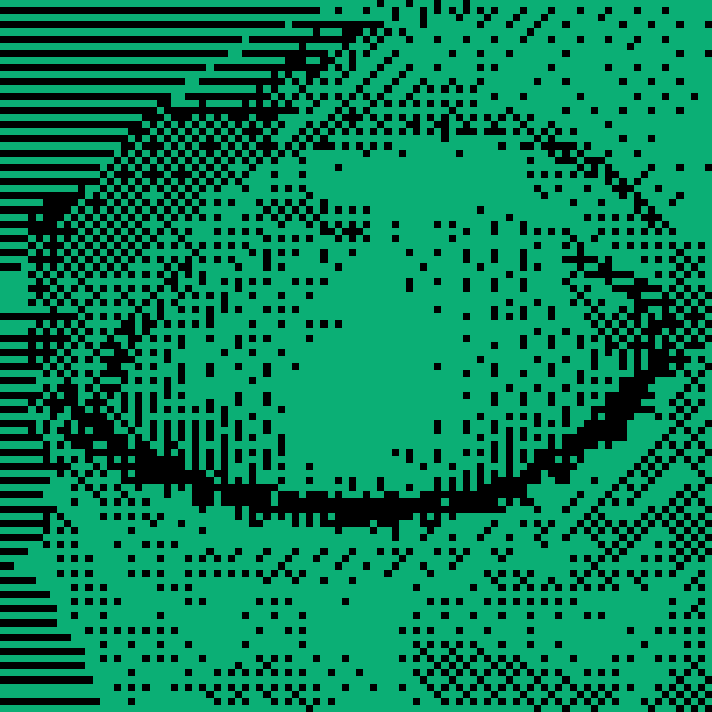
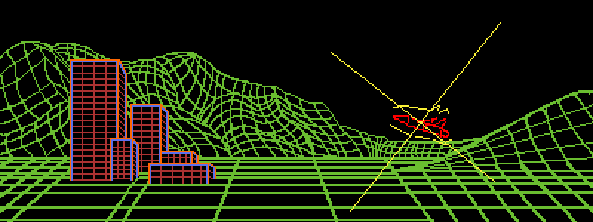
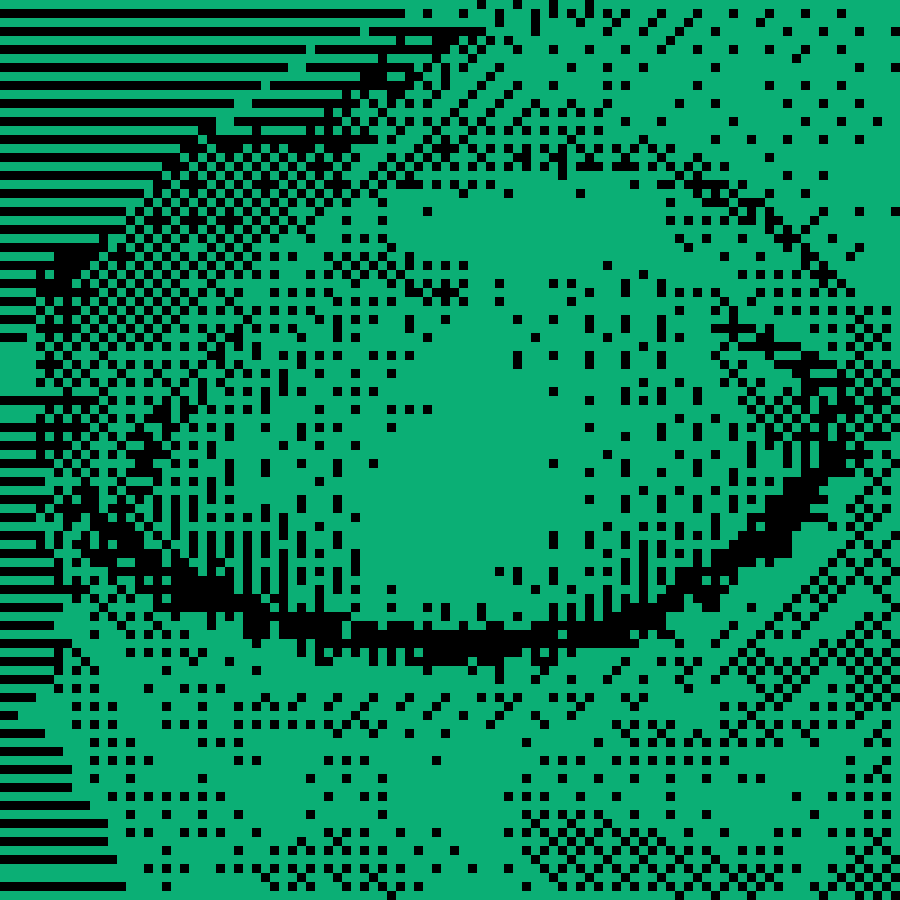
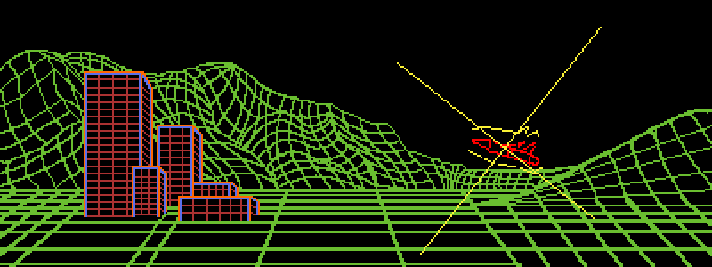

About Me
Hi, I’m Jimmy. I’m a former Active Duty U.S. Navy Sailor with
six years of honorable service. Near the end of my contract, I discovered
programming - and it quickly became a passion.
Over the past several months, I’ve spent countless hours building projects
and learning by doing. I’ve worked on everything from
stock market simulations in Pygame to
training machine-learning agents in custom environments,
as well as web development projects like this one.
I’m actively seeking internships, entry-level roles, or training
opportunities where I can continue to grow as a developer.
I’m motivated, disciplined, and eager to learn.
Projects
Pygame Stock Market Simulation
A data-driven stock market simulator with real-time price and volume modeling
This project significantly deepened my understanding of
object-oriented programming and the importance of
well-structured, maintainable data systems.
Early on, I faced challenges managing a large JSON-based data schema
containing roughly 2,000 data points per stock, including
simulated volume, OHLC data, and real-time price updates.
As complexity increased, JSON I/O became a performance bottleneck.
Recognizing this, I refactored the data layer to use
SQLite, designing a schema optimized for frequent reads
and writes. This change significantly improved performance and scalability.
Modular Crafting & Sprite Generation System
A procedural weapon crafting and sprite generation prototype built in Python
I began this project by applying lessons learned from my simulation work,
particularly around class design and
modular architecture.
This led to a dynamic sprite generation system paired with shape-based
crafting logic. A dedicated object factory generates thematically
consistent weapons based on selected materials and their elemental
properties.
These attributes influence both visual components and procedurally
generated prefix and suffix names, significantly reducing manual asset
creation and saving development time.
Experimental Tile-Based World Renderer
An early prototype built with FreeSimpleGUI
This experimental prototype pushed me to think creatively about
performance constraints and system design.
I implemented a functional overworld traversal system using FreeSimpleGUI
a library not intended for real-time rendering.
The world was defined as an ASCII grid, with characters mapped to tile
sprite paths. On first load, the entire map was dynamically composed into
a single PNG image and cached for reuse.
While I would approach this differently today, the project taught me
valuable lessons about performance bottlenecks, asset management,
caching strategies, and working within tool constraints.
Tactical Isometric Tile Engine (In Development)
A performant, systems-driven battlefield engine built from the ground up in Python
This project is a major evolution of my earlier tile-based experiments,
focused on building a scalable, real-time procedural rendering pipeline suitable for
tactical and strategy gameplay.
The engine renders a large isometric battlefield composed of layered tiles, elevation steps,
and dynamic entities. A custom camera system supports smooth panning, zooming, and precise
screen-to-world interaction.
To address performance constraints, I implemented aggressive viewport culling,
minimized redundant draw calls, and refactored rendering logic into tightly scoped systems.
These changes resulted in a significant FPS improvement while maintaining visual clarity.
Beyond rendering, the engine integrates grid-based movement, action dispatching, and a modular
battle architecture designed to support turn-based combat, abilities, and future AI behavior.
This project reflects my current approach to development: designing systems with
clear responsibilities, measurable performance goals, and long-term extensibility.
 


